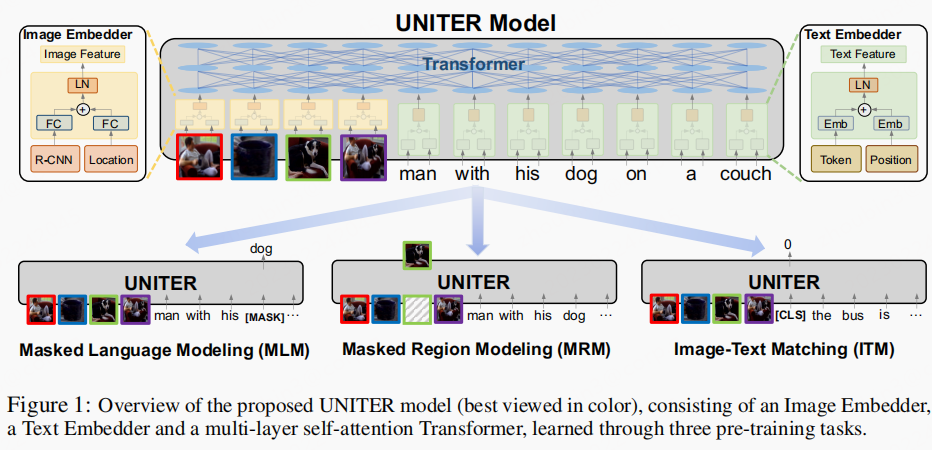
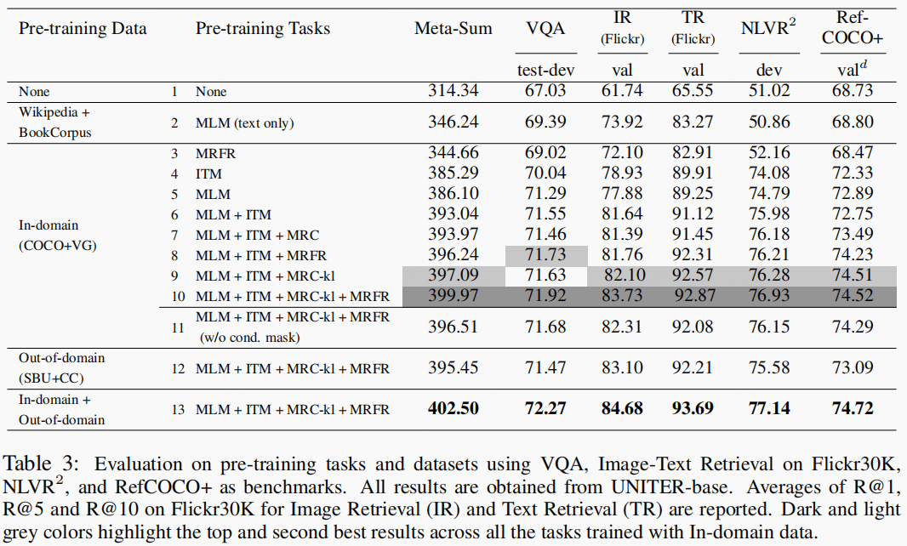

文章idea
- 之前的图文相关任务均是
task-specific，相互之间不能泛化，缺少统一解决V+L的模型方案。
文章贡献
- 提出了新的多模态框架
UNITER [UNiversal Image-TExt Representation]。 - 而且在多个
V+L任务中取得SOTA
模型结构

Image Embedder
Image Embedder使用了Faster R-CNN。针对每个region抽取特征(pooled ROI features)，每个region的Location特征使用7维的特征进行描述:[x1, y1, x2, y2, w, h, w ∗ h](normalized top/left/bottom/right coordinates, width, height, and area.；最终将visual特征和Location特征结合在一起。Our Faster R-CNN was pre-trained on Visual Genome object+attribute data
Text Embedder
Text Embedder与BERT相同，使用WordPiece提取句子中的token。将token embedding与position embedding结合在一起。- 最终图像与文本特征交叉层使用的
transformer-Encoder。
特征对齐
- 标准的
transformer-encoder结构，不做过多赘述。
损失
- 该框架有三个损失函数：
Masked Language Modeling (MLM), Image Text Matching (ITM), and Masked Region Modeling (MRM, with three variants) MLM: 无需过多赘述ITM：无需过多赘述MRM: 随机mask15%的region，其值用0代替，与文本用离散[mask]表示不同。Masked Region Feature Regression:target是region特征，连续值，L2 loss。Masked Region Classification:target是region的标签类别，交叉熵损失。Masked Region Classification with KL-Divergence (MRC-kl)：target是region特征，连续值，但是使用KL-Divergence损失，衡量两个分布的差异。
模型试验
- 数据集共4个：
COCO, Visual Genome, Conceptual Captions, and SBU Captions - 基于预训练好的模型，在task中进行
finetune，共评估了6个任务，2种模型：UNITER-base with 12 layersand andUNITER-large with 24 layers。
